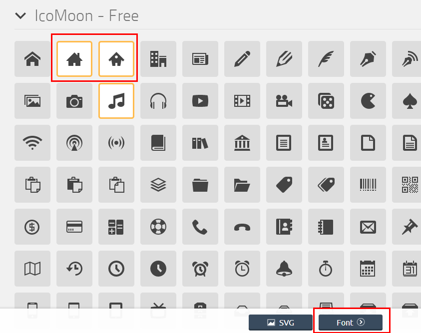

what
they are
why
they are cool
how
to build & use
icon font
吴梦圆
@wileam
2013.12.21 Beijing Open Party
what is icon font?
what is icon font?
Font Awesome gives you scalable vector icons that can instantly be customized — size, color, drop shadow, and anything that can be done with the power of CSS.-- fontawesome.io
WHAT IS ICON FONT?

 ...... etc
...... etc
...... etc
why using icon font?
WHY USING ICON FONT
-
Vector
- Infinite Scalability
- Perfect on Retina Displays
- Responsive Design
- ……
why using icon font
-
CSS Control
Easily style icon color, size, shadow, and
anything that's possible with CSS.
WHY USING ICON FONT
- Light weight
- Great performance
WHY USING ICON FONT
- Cross browser support
disadvantage
- Single Color
- Takes time to create a custom font
- Screen readers(?)
how to build icon font?
how to build an icon font
create vector icons
how to build an icon font
icon font generator
-
Fontello
-
IcoMoon
-
Pictonic
-
Pictos Server
- ……
how to build an icon font
icomoon
how to build an icon font
icomoon

how to build an icon font
icomoon
how to use icon font
how to use icon font
- font files
- style.css
HOW TO USE ICON FONT
Embedding the font
@font-face {
font-family: 'seedIcon';
src:url('../fonts/seedIcon.eot');/* IE9*/
src:url('../fonts/seedIcon.eot?#iefix') format('embedded-opentype'), /* IE6-8 */
url('../fonts/seedIcon.ttf') format('truetype'), /* chrome、firefox */
url('../fonts/seedIcon.woff') format('woff'), /* chrome、firefox、opera、Safari, Android, iOS 4.2+*/
url('../fonts/seedIcon.svg#seedIcon') format('svg'); /* iOS 4.1- */
font-weight: normal;
font-style: normal;
} HOW TO USE ICON FONT
Embedding the font
[class^="sicon-"], [class*=" sicon-"] {
font-family: 'seedIcon';
speak: none;
font-style: normal;
font-weight: normal;
font-variant: normal;
text-transform: none;
line-height: 1;
/* Better Font Rendering */
-webkit-font-smoothing: antialiased;
-moz-osx-font-smoothing: grayscale;
text-rendering: optimizeLegibility;
} HOW TO USE ICON FONT
two main ways
-
Use the data-icon attribute
- Use the css class name
HOW TO USE ICON FONT
naming the icons
.sicon-chart-line:before {
content: "\e640";
}
.sicon-chart-bar:before {
content: "\e641";
}
.sicon-chart-area:before {
content: "\e642";
} HOW TO USE ICON FONT
using icons in your html
<i class="sicon-chart-line"></i>
<i class="sicon-chart-bar"></i>
<i class="sicon-chart-area"></i> HOW TO USE ICON FONT
styling icons
[class^="sicon-"]:hover {
color: #000000;
}.sicon-spin {
display: inline-block;
-moz-animation: spin 2s infinite linear;
-o-animation: spin 2s infinite linear;
-webkit-animation: spin 2s infinite linear;
animation: spin 2s infinite linear;
}.sicon-rotate-90:before {
-webkit-transform: rotate(90deg);
-moz-transform: rotate(90deg);
-ms-transform: rotate(90deg);
-o-transform: rotate(90deg);
transform: rotate(90deg);
} Q&A
吴梦圆
wileam
@wileam
wileam.cn@gmail.com